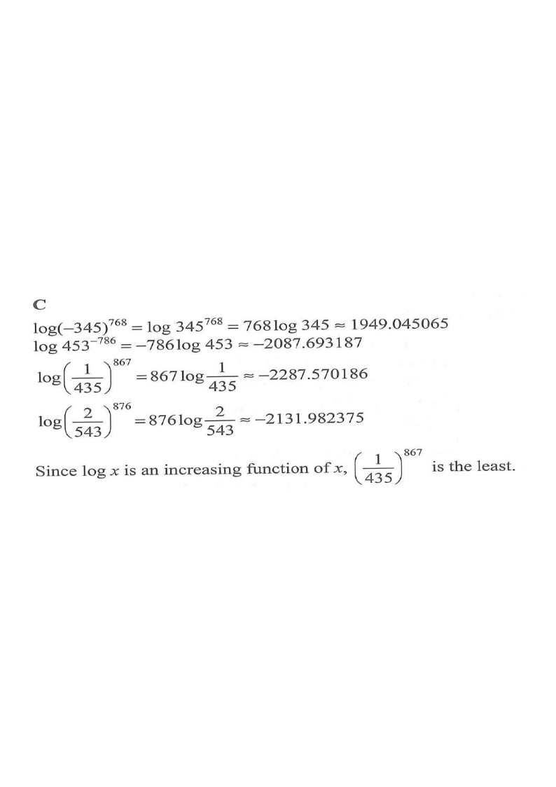

A $-345^{768}$B $453^{-786}$C $(1/435)^{867}$D $(2/543)^{876}$
Scroll the solution to highlight each option.
HKDSE 2022 · Paper 2 · Q31Topic 8 — Laws of Indices, Exponential & Logarithmic Functions
Question. Which of the following is the least?
A. $\;(-345)^{768}$
B. $\;453^{-786}$
C. $\;\left(\dfrac{1}{435}\right)^{867}$
D. $\;\left(\dfrac{2}{543}\right)^{876}$

Figure (original exam diagram)
STEP 1
Strategy: take logarithms to compare
Power Law of Logarithms\(\log a^{n}=n\log a\)Each option becomes one product, e.g. \(\log 345^{768}=768\log 345\).
Logarithm is an Increasing Function\(0Comparing the four logarithms ranks the four powers, however huge they are.
All four numbers are huge powers. Instead of comparing the enormous values directly, take $\log$ of each — because $\log x$ is an increasing function, the number with the smallest logarithm is the smallest number.
We use the law $\log a^{n}=n\log a$ on each option.
Hint: turning powers into products makes the comparison a simple arithmetic one.
STEP 2
Option A: $\;(-345)^{768}$
Since $768$ is even, $(-345)^{768}=345^{768}$ (positive).
A negative logarithm means the value is less than $1$.
STEP 4
Option C: $\;\left(\dfrac{1}{435}\right)^{867}$
Logarithm of a Reciprocal\(\log\dfrac{1}{x}=-\log x\quad(x>0)\)\(\left(\dfrac{1}{435}\right)^{867}\) has logarithm \(-867\log 435\approx-2287.6\), the smallest of the four.
Therefore $\left(\dfrac{1}{435}\right)^{867}$ is the least.
Order the logarithms on a number line — the leftmost one is the answer.
Answer: $\boxed{\text{C}}\;$ $\left(\dfrac{1}{435}\right)^{867}$ is the least.
PRACTICESimilar question — try it yourself
Question. Which of the following is the least? A. \(\left(\dfrac{1}{6}\right)^{50}\) B. \(9^{-40}\) C. \(\left(\dfrac{2}{7}\right)^{45}\) D. \((-5)^{60}\) [1 mark]
Show the worked solution
Step 1. Take logarithms: \(\log x\) is increasing, so the least number has the least logarithm.